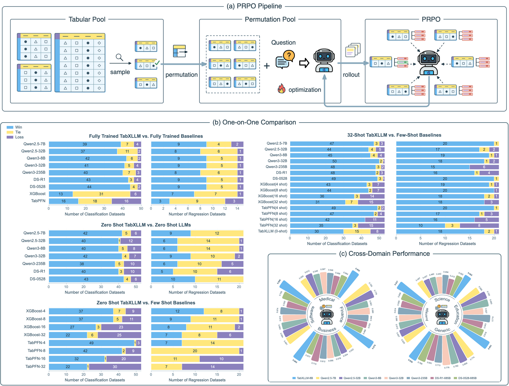
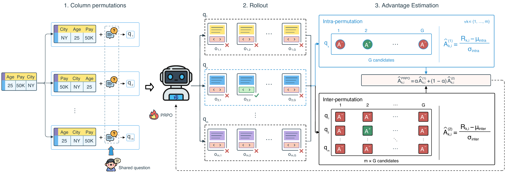
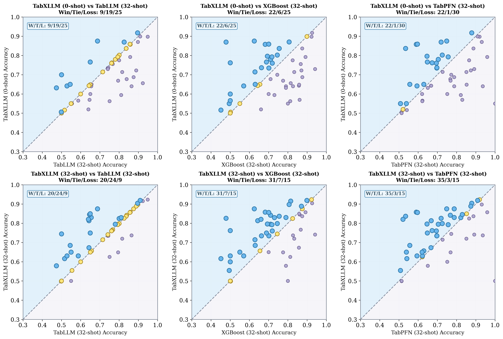
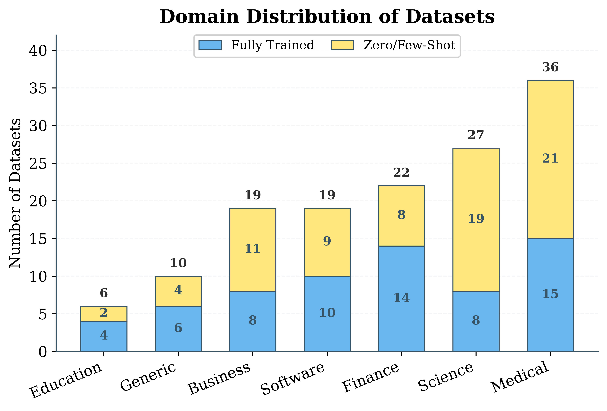

Abstract
TL;DR: An 8B language model learns the structural priors of tables through PRPO, enabling competitive zero- and few-shot tabular prediction.

Tabular prediction has long been dominated by gradient-boosted decision trees and specialized deep tabular models, while large language models (LLMs) remain difficult to make competitive despite their cross-task adaptability and transparent reasoning traces. We address this gap by incorporating tabular structural priors into LLM post-training. Specifically, we propose Permutation Relative Policy Optimization (PRPO), which operationalizes column-permutation invariance through label-preserving column permutations and two-level advantage estimation. This design converts sparse outcome rewards into denser and more stable optimization signals. Using PRPO, we develop TabXLLM, an 8B LLM for tabular prediction. Extensive experiments on 139 OpenML datasets show that TabXLLM reaches a competitive regime against strong specialized tabular baselines. It achieves strong fully supervised performance, dominates zero-shot settings, and performs on par with 32-shot strong baselines. Moreover, it substantially outperforms much larger general-purpose and reasoning LLMs, including up to a 53.17% improvement over DeepSeek-R1 (685B). These results show that structural-prior RL post-training is an effective route for making LLMs competitive in tabular prediction.
Tabular Prediction Results
An 8B language model, competitive with specialized tabular predictors. Explore the paper’s results across full supervision and cross-dataset transfer.
Full supervision
Fully supervised classification and regression
50 classification and 15 regression datasets · Mean results
| TabXLLM-8BOurs | 0.8436 | 0.1499 |
|---|---|---|
| XGBoost | 0.8234 | 0.1682 |
| LightGBM | 0.8321 | 0.1607 |
| CatBoost | 0.8398 | 0.1458 |
| TabPFN v2 | 0.8413 | 0.1236 |
Cross-dataset generalization
Zero- and few-shot classification
53 unseen classification datasets · Mean accuracy
| TabXLLM-8BOurs | 0.7021 | 0.7542 |
|---|---|---|
| Qwen2.5-7B | 0.5804 | 0.6012 |
| Qwen2.5-32B | 0.5930 | 0.6042 |
| Qwen3-8B | 0.5765 | 0.6110 |
| Qwen3-32B | 0.5599 | 0.6020 |
| Qwen3-235B | 0.5870 | 0.5973 |
| DeepSeek-R1-685B | 0.5313 | 0.5895 |
| DeepSeek-R1-0528-685B | 0.5519 | 0.5943 |
| TabLLM | — | 0.7246 |
| Tabula-8B | 0.6468 | 0.7165 |
| XGBoost | — | 0.7219 |
| LightGBM | — | 0.7312 |
| CatBoost | — | 0.7396 |
| TabPFN v2 | — | 0.6974 |
Cross-dataset generalization
Zero- and few-shot regression
21 unseen regression datasets · Mean NMAE
| TabXLLM-8BOurs | 0.1614 | 0.1110 |
|---|---|---|
| Qwen2.5-7B | 0.2021 | 0.1961 |
| Qwen2.5-32B | 0.3146 | 0.2754 |
| Qwen3-8B | 0.2409 | 0.2173 |
| Qwen3-32B | 0.2370 | 0.2060 |
| Qwen3-235B | 0.2544 | 0.2190 |
| DeepSeek-R1-685B | 0.2329 | 0.2247 |
| DeepSeek-R1-0528-685B | 2.3435 | 1.0681 |
| XGBoost | — | 0.1744 |
| LightGBM | — | 0.1246 |
| CatBoost | — | 0.1187 |
| TabPFN v2 | — | 0.1119 |
Reading the results. Higher accuracy and lower NMAE are better. TabXLLM and prompted LLMs use 32 in-context examples without parameter updates; TabLLM and specialized tabular baselines are fitted on 32 labeled samples. A dash denotes an unreported result.
Permutation Relative Policy Optimization
Column order changes how a table is serialized, but it should not change the prediction. Permutation Relative Policy Optimization (PRPO) turns this structural prior into a learning signal: generate label-preserving column permutations, sample multiple reasoning outputs for each, and compute advantages both within and across permutation groups.

1. Permute. Reorder feature–value pairs while preserving the target label.
2. Rollout. Generate candidate predictions and score them with verifiable outcome rewards.
3. Optimize. Combine local and global advantages to produce denser, more stable optimization signals.
Per-Dataset Comparison
On the 53 classification tasks, the top row compares zero-shot TabXLLM with baselines trained on 32 labeled examples. The bottom row provides TabXLLM with 32 in-context examples: its win/tie/loss counts reach 31/7/15 against XGBoost and 35/3/15 against TabPFN.

Datasets and Evaluation
We collect 139 public OpenML datasets: 103 classification datasets and 36 regression datasets, covering a broad range of real-world domains. Tabular rows are serialized into feature–value descriptions and paired with task-specific prediction questions.
Fully supervised
50 classification + 15 regression tasks. Train and evaluate on the respective datasets.
ZeroTabBench
53 classification + 21 regression tasks. Transfer to unseen datasets without target-task examples.
FewTabBench
53 classification + 21 regression tasks. Provide 32 labeled observations as in-context demonstrations, with no parameter updates.
ZeroTabBench and FewTabBench share the same held-out tasks; neither uses target-task training or validation data for model development.

Citation
If you find TabXLLM useful in your research, please cite our paper.
@article{cai2025tabxllm,
title={TabXLLM: Unlocking Zero- and Few-Shot Tabular Prediction in LLMs via Structural-Prior Reinforcement Learning},
author={Cai, Pengxiang and Gao, Zihao and Lian, Wanchen and Li, Guocong and Chen, Jintai},
journal={arXiv preprint arXiv:2510.17385},
year={2025}
}